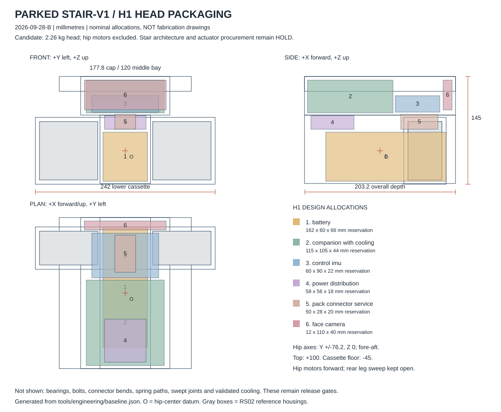

Hux / 2026-09-28-B
Head and leg engineering review
Keep the step objective. Reopen the legs before buying the actuator set.
No components purchased. Stair procurement is on hold. A successful short hop does not establish controlled one-leg support or a full step. The ten-axis alternative below is a candidate, not a validated fix.
Calculated screening results
| Case | Failed geometry samples | Clearance flags | Peak gravity hip roll | Modeled span | Release |
|---|---|---|---|---|---|
| 24-inch / wide entry | 14 / 91 | 2 | 9.29 N·m | 552 mm | HOLD |
| 24-inch / narrow entry | 3 / 91 | 17 | 6.63 N·m | 369 mm | HOLD |
| 25-inch / narrow entry | 0 / 91 | 1 | 6.61 N·m | 356 mm | HOLD |
| 26-inch / wide entry | 0 / 91 | 1 | 8.91 N·m | 541 mm | HOLD |
| 27-inch / wide entry | 0 / 91 | 0 | 9.03 N·m | 547 mm | HOLD |
| 26-inch / narrow entry — preferred study | 0 / 91 | 0 | 6.61 N·m | 355 mm | HOLD |
| 26-inch narrow / +0.60 kg | 0 / 91 | 0 | 7.02 N·m | 355 mm | HOLD |
| 27-inch / narrow entry | 0 / 91 | 0 | 6.61 N·m | 356 mm | HOLD |
The wide-entry cases require a large sideways head excursion. The 26-inch narrow-entry candidate connects its poses and passes 810 interpolated reach/limited-clearance/width samples, with 0.17 mm maximum modeled COM residual. Its nominal 355.4 mm span has almost no allowance below 14 inches; it is not a manufactured-envelope guarantee. The actual ankle mechanism, full solid collisions, timing, dynamics and mounted thermal duty remain unvalidated.
H1 head allocation
203.2 mm deep, 120 mm middle bay, 177.8 mm top-cap width, 242 mm lower cassette. Top +100 mm and cassette floor −45 mm from the hips. Estimated head mass 2.26 kg; CoM (6.19, 0, +20.78) mm. Shortening the head permits longer legs, but the compact candidate still fails the step screen.

What changes before a purchase
Establish finite lateral contact width and a torque-transmitting ankle, solve the real ankle orientation and linkage, time and validate the connected path with full collisions, then test mounted torque/temperature and actual contact behavior. A loose swivel and a wider tire do not by themselves solve balance.
Complete ten-axis candidate budget: $2,236–3,498 before shipping/tax. Includes charging, power, bearings, frame stock and harnesses. Prices are planning allowances.
Full findings, equations, sources and release gates · Machine-readable results · Decision log